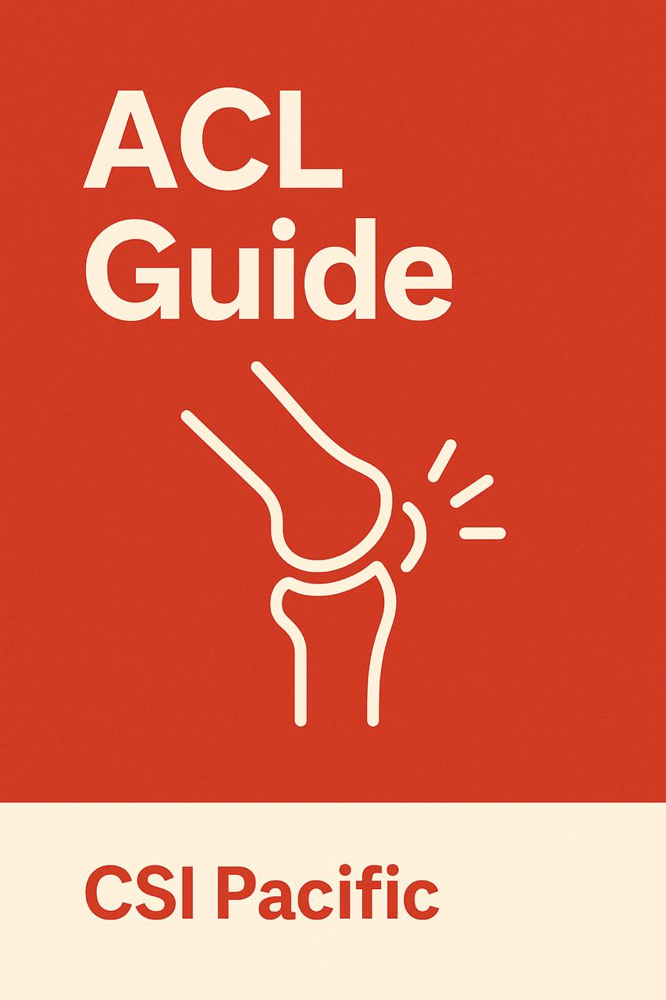
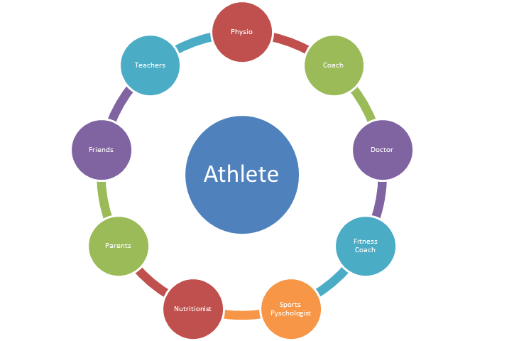

This ACL rehabilitation protocol is designed as a comprehensive resource for every person involved in a rehab, starting with the athlete them-self. This document will allow the athlete to take ownership of the rehabilitation process and to know exactly how they are progressing throughout the journey. Although the athlete is at the centre of this process at all times, this document is technical and scientific, and will provide CSI Pacific staff, Integrated Service Team (IST) members, and other sport partner personnel with a thoroughly-researched, evidence-based plan to help the athlete return to performance.

This protocol embodies and aligns closely with CSI Pacific’s Critical Success Factors:
This tool facilitates seamless collaboration amongst every member of the athlete’s support team. All information will be in one place and everybody will have the opportunity to be on the same page.
An athlete-centred approach, backed by the dedication and hard work of CSI Pacific practitioners will give athletes the best possible chance of a successful return to performance.
This ambitious protocol, centred on meticulous data management is unique in the field of injury rehabilitation. It allows us to continually provide best-practice service, and to learn and grow with every successful rehab.
This protocol is backed by the latest scientific research as well as the experience of expert-level practitioners who have led successful rehabilitations for some of Canada’s top athletes.
Importantly, this protocol is criteria-based. Every athlete will move through the rehabilitation at their own pace, allowing the criteria to govern progression. Occasionally, estimated time-lines will be cited in order to provide some temporal context for the rehabilitation, but it is important to remember that every ACL injury and rehab is different, and that allowing the criteria to dictate progression will keep the process on track and ultimately lead to the most successful return to performance.
This protocol is different from previously published ACL Rehabilitation Protocols in that it is a living document, fully integrated with all of the athlete’s data and unique information needed to tailor the process to the individual. Some advantages of this approach include:
All information is in one place. There is no need to email documents back and forth, or to print PDFs, or to rely on pencil and paper data collection. Every person involved in the rehab will have consistent access to all information, allowing seamless collaboration amongst everyone involved.
Direct integration with CSI Pacific’s Athlete Management System (AMS). This enable meticulous tracking of every aspect of an ACL rehab, so we can deliver the best rehab possible while also learning what we can improve for future cases.
Automated tailoring of the process to the individual based on certain aspects of the injury. For example, the rehabilitation will differ based on the type of surgery that is performed. Important information like this will be baked into the back end of this document, ensuring that the correct procedures are in place.
One common tool for all users. Once an athlete or practitioner becomes familiar with the document, they will be able to easily find the information that is important to them. For example, the athlete may only be interested in a brief overview of their current status, while the S&C coach may want to deep dive into the academic references. In short, each user can decide how they interact with this tool.
Continuous Innovation. As new evidence and tools become available, the document can easily be updated to reflect current best-practice.
A foundational objective of this protocol is to be as open as possible, and to facilitate sharing of information. We aim to provide you the resources needed to understand the process and take ownership over your rehab.
With that said, much of the information in this book is targeted towards a multidisciplinary team of practitioners with advanced education in human movement and experience guiding injury rehabilitation. This protocol should provide a framework for each of these professionals to participate in an athlete-centred approach.

There is no expectation for you to read this e-book front-to-back, but all of the information is there for you to engage with as you wish, and of course, questions are always encouraged!
This protocol strives to gather the best available evidence on ACL rehabilitation and to organize that information in a way that is directly actionable. Practitioners and decision makers should be able to follow along and obtain a clear picture of WHAT needs to be accomplished and also HOW to accomplish it. While this document is meant as a comprehensive resource, it is important to acknowledge that there will always be many different ways to approach any situation. Not all practitioners will agree on the optimal approach at all times, and that is okay. A primary goal of this document is to serve as a starting point for productive collaboration between all practitioners involved in the rehab process. Used effectively, this resource should help an integrated service team deliver the best possible rehab for the athlete. The protocol alone does not ensure a strong and successful return to performance; such an outcome will depend first and foremost on the dedicated and attentive delivery of the protocol by skilled practitioners.